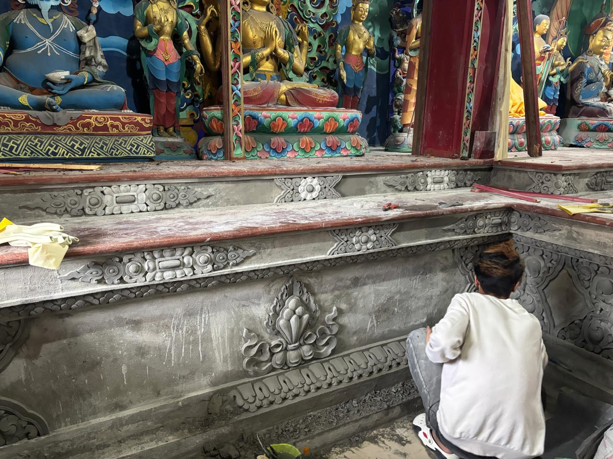

Restoration & Current Challenges
Sangchen Thongdrol Ling has faced structural and material challenges over time, including damage from the 2011 earthquake and the gradual reduction of its original land holdings due to encroachment. Restoration efforts have been undertaken with support from the Ecclesiastical Affairs Department of the Government of Sikkim.
In recent years, these efforts have been significantly guided by Lopon Yeshey Dorjee Bhutia, working in coordination with the Ecclesiastical Affairs Department, Government of Sikkim, and with the active support of local community members. Together, they have contributed to a steady transformation—from a state of structural decline to a more stable and functioning institution. The work reflects a sustained commitment to preserving the monastery’s physical structure, its ritual life, and its role within the wider Nyingma tradition.

Restoration work underway at Sangchen Thongdrol Ling, supported by the Ecclesiastical Affairs Department and local community members, c. recent years.
Final phase of restoration work at Sangchen Thongdrol Ling, reflecting recent efforts to stabilise and preserve the monastery structure.